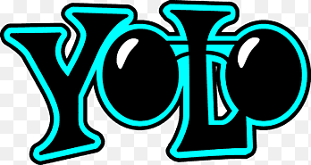
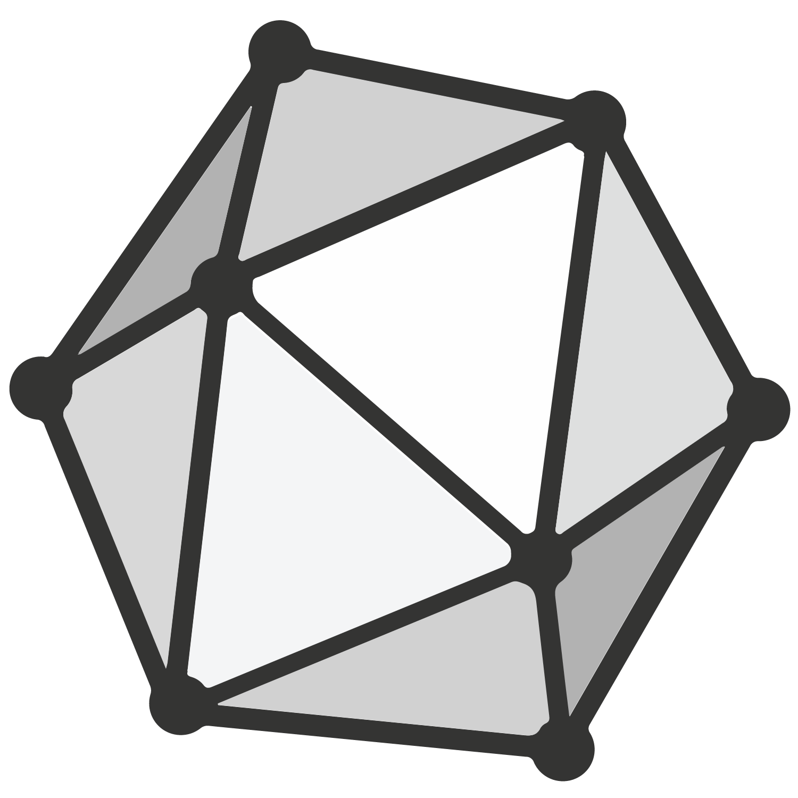

 YOLOv10
Latest iteration of the YOLO (You Only Look Once) object detection system. Provides real-time hand gesture recognition with high accuracy and low latency, perfect for interactive gaming.
// Object detection with YOLOv10
const { output0 } = await session.net.run({
images: letterbox
});
 ONNX Runtime Web
High-performance inference engine for ONNX models in the browser. Enables running complex neural networks directly in the browser without server calls.
const session = await InferenceSession.create(
modelBuffer
);
 WebAssembly (WASM)
WebAssembly (WASM)
Powers the neural network inference with near-native performance. Allows complex computations to run efficiently in the browser.
 React
React
Powers the responsive UI and game state management. Enables smooth updates and transitions as you play against the AI.